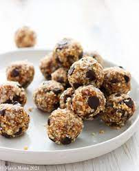

Coconut Date No Bake Energy Balls

Fast and easy no bake energy balls
Coconut date balls are little balls of nutrition made with dates and nuts and then coated in shredded coconut – an easy-to-make sweet & healthy vegan snack!
Ingredients
- 10-12 medjool dates
- 2 cups pecans
- Pinch sea salt
- ¼ cup desiccated coconut
Steps
- Pit the medjool dates and soak them in warm water for 10 minutes until they soften
- Place the pitted dates and pecans in the bowl of a large food processor. Blend on high until a thick “dough” is formed and the mixture feels sticky.
- Scoop about 1-2 tablespoons of the mixture and use your hands to roll it into a ball. If you have time you can let them set in the fridge for 5 minutes.
- Roll the energy bites into desiccated or shredded coconut pressing gently so they adhere. Makes about 12-14 bites.